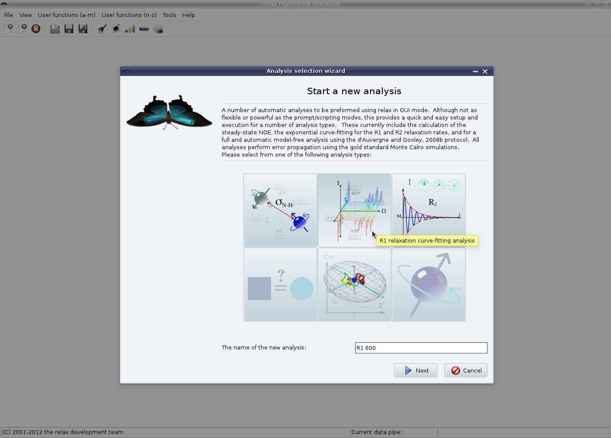
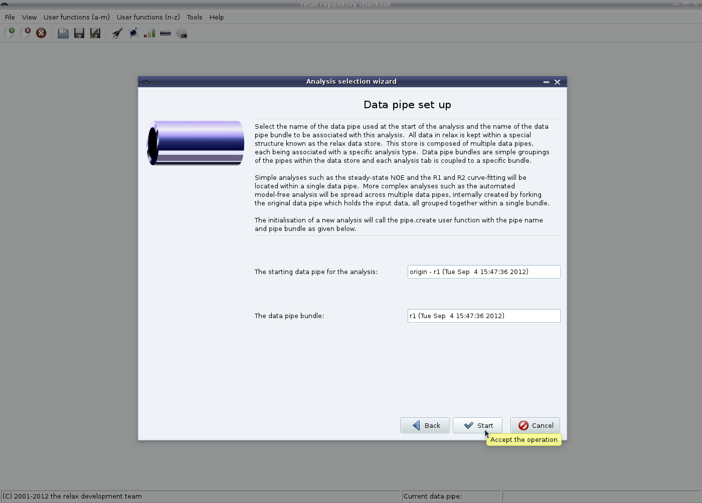

Next: NOE GUI mode - Up: The NOE auto-analysis in Previous: The NOE auto-analysis in Contents Index
First launch the analysis selection wizard (see Figure 1.4 on page ![[*]](crossref.png) ).
Select the NOE analysis and, if you plan on running steady-state NOE analyses from multiple fields in one relax instance, change the name of the analysis:
).
Select the NOE analysis and, if you plan on running steady-state NOE analyses from multiple fields in one relax instance, change the name of the analysis:
|

|
The second part of the wizard need not be modified, just click on ``Start'' to begin. This will create a dedicated data pipe for the analysis. A data pipe bundle will also be created, but for the steady-state NOE will only contain a single data throughout the analysis.
|

|
The relax user manual (PDF), created 2015-03-13.